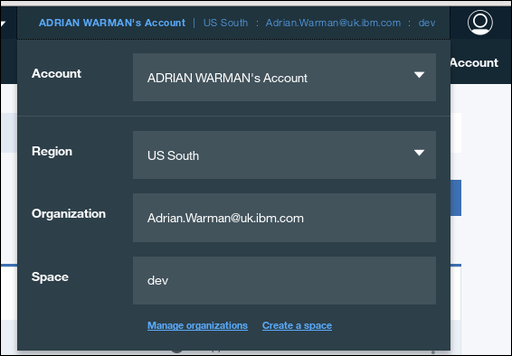
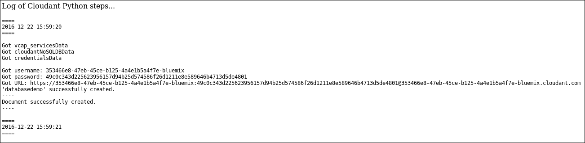
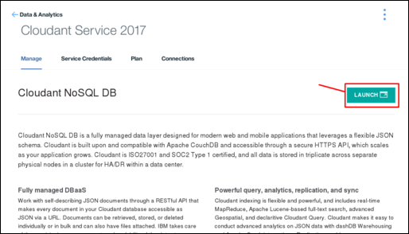
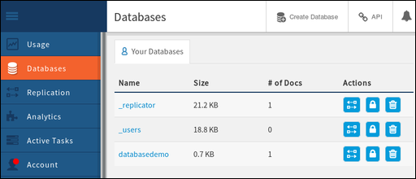
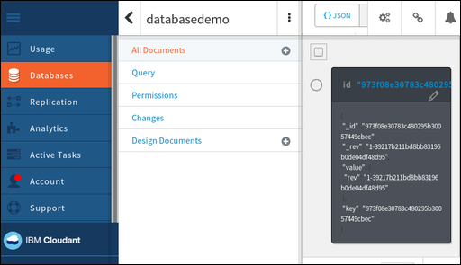
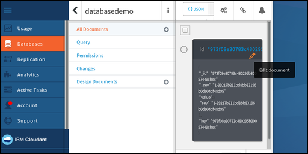
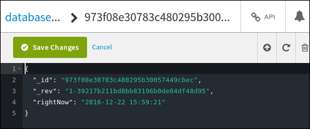

cf api' command to manage the API endpoint. More information about the 'cf api'
command is
available  .
.This section of the tutorial describes how to upload an IBM® Bluemix® application.
The first task is to connect to Bluemix.
The Bluemix toolkit helps you to make the connection.
Cloud Foundry needs to know the URL to use for making API calls, for example when you upload an application. The Bluemix toolkit uses the 'cf api' command to manage the API endpoint. More information about the 'cf api'
command is
available .
Use the following command to tell Cloud Foundry the URL to use:
bluemix api https://api.ng.bluemix.net
Expect a result similar to the following output:
Invoking 'cf api https://api.ng.bluemix.net'...
Setting api endpoint to https://api.ng.bluemix.net...
OK
API endpoint: https://api.ng.bluemix.net
API version: 2.54.0
Not logged in. Use 'bluemix login' to log in.
Cloud Foundry now knows where to send API calls for managing applications.
The next step is to log in to your Bluemix application environment. You must supply the following account details:
-u' parameter.-o' parameter.-s' parameter.Note: The account details are available on your Bluemix dashboard, when you log in through a web browser, as shown in the following example:

Use a command similar to the following example to log in to your Bluemix application environment. Notice that you are asked to enter your account password.
bluemix login -u Adrian.Warman@uk.ibm.com -o Adrian.Warman@uk.ibm.com -s dev
Expect a result similar to the following output:
Invoking 'cf login -u Adrian.Warman@uk.ibm.com -o Adrian.Warman@uk.ibm.com -s dev'...
API endpoint: https://api.ng.bluemix.net
Password>
Authenticating...
OK
Targeted org Adrian.Warman@uk.ibm.com
Targeted space dev
API endpoint: https://api.ng.bluemix.net (API version: 2.54.0)
User: adrian.warman@uk.ibm.com
Org: Adrian.Warman@uk.ibm.com
Space: dev
The Cloudant Foundry toolkit now knows how to connect to the Bluemix environment.
The next step is to upload the application itself. Details of a Bluemix application are provided in the manifest file.
The manifest file for the tutorial application was updated as described here
Use a command similar to the following example to log in to upload your Bluemix application.
cf push "Cloudant Python"
A sequence of result messages is displayed.
Using manifest file /..../BMXDemo/manifest.yml
Updating app Cloudant Python in org Adrian.Warman@uk.ibm.com / space dev as Adrian.Warman@uk.ibm.com...
OK
The Cloud Foundry toolkit located the manifest file, and is preparing to upload the application by using the connection and identification details you provided earlier.
Using route Cloudant-Python.mybluemix.net
Uploading Cloudant Python...
Uploading app files from: /..../BMXDemo
Uploading 1.5K, 3 files
Done uploading
OK
Binding service Cloudant Service 2017 to app Cloudant Python in org Adrian.Warman@uk.ibm.com / space dev as Adrian.Warman@uk.ibm.com...
OK
The application was uploaded successfully, and a connection made with the Cloudant NoSQL DB database instance.
Starting app Cloudant Python in org Adrian.Warman@uk.ibm.com / space dev as Adrian.Warman@uk.ibm.com...
-----> Downloaded app package (4.0K)
-----> Downloaded app buildpack cache (29M)
-------> Buildpack version 1.5.5
$ pip install -r requirements.txt
DEPRECATION: --allow-all-external has been deprecated and will be removed in the future. Due to changes in the repository protocol, it no longer has any effect.
Collecting cloudant==2.3.1 (from -r requirements.txt (line 1))
Downloading cloudant-2.3.1-py2-none-any.whl (63kB)
Collecting requests<3.0.0,>=2.7.0 (from cloudant==2.3.1->-r requirements.txt (line 1))
Downloading requests-2.12.4-py2.py3-none-any.whl (576kB)
Installing collected packages: requests, cloudant
Successfully installed cloudant-2.3.1 requests-2.12.4
You are using pip version 8.1.1, however version 9.0.1 is available.
You should consider upgrading via the 'pip install --upgrade pip' command.
You are using pip version 8.1.1, however version 9.0.1 is available.
You should consider upgrading via the 'pip install --upgrade pip' command.
-----> Uploading droplet (30M)
0 of 1 instances running, 1 starting
1 of 1 instances running
App started
OK
App Cloudant Python was started using this command `python server.py`
The application starts automatically. As part of the startup, a check is made to ensure that all requirements are met, by evaluating the contents of the requirements.txt file. The application requires access to the Cloudant NoSQL DB library, which was specified when the application was created.
After you upload and start the application, some simple system checks are run to confirm that the application is running correctly as far as Bluemix is concerned.
Showing health and status for app Cloudant Python in org Adrian.Warman@uk.ibm.com / space dev as Adrian.Warman@uk.ibm.com...
OK
requested state: started
instances: 1/1
usage: 128M x 1 instances
urls: Cloudant-Python.mybluemix.net
last uploaded: Thu Dec 22 15:58:18 UTC 2016
stack: cflinuxfs2
buildpack: python 1.5.5
state since cpu memory disk details
#0 running 2016-12-22 03:59:21 PM 0.0% 49.9M of 128M 110.6M of 1G
When the Bluemix Application environment was first created, the dashboard included a link in the Route column for the application:

Clicking the link opens a browser window, requesting some data from the application that is listening at the corresponding port. The application responds by returning the contents of the log file that was generated as the application was starting:

The contents of this log file are interesting. The start and end times are clearly displayed. In between, the log records each of the details as the connection information for the Cloudant NoSQL DB was retrieved. The actual values of the connection are not important. The log shows that the tutorial application was able to locate, retrieve, and use those values to create a new document in the Cloudant NoSQL DB database.
Start by opening the Cloudant NoSQL DB Dashboard. Click the Launch icon on the Manage tab of the Cloudant NoSQL DB service page:

Note: To find your Cloudant NoSQL DB service page, refer to the details in the 'Creating a Cloudant NoSQL DB instance' tutorial.
When the dashboard opens, you can see that the application created the 'databasedemo' database:

The database contains a single document, created by the application. To verify the presence of the document, click the database name within the dashboard. A list of options for the database appears. When you select the All documents tab,
details for a single document appear:

To see the contents of the document, click the Edit icon, which appears as an image of a pencil:

When the contents of the document appear, you can see each of the fields that were created by the tutorial application.

In particular, the rightNow field has the date and time the document was created. This value corresponds to the time that was recorded within the
application log file.
The next step in the tutorial is to operate and maintain the application, for example when you start, stop, and debug the application.